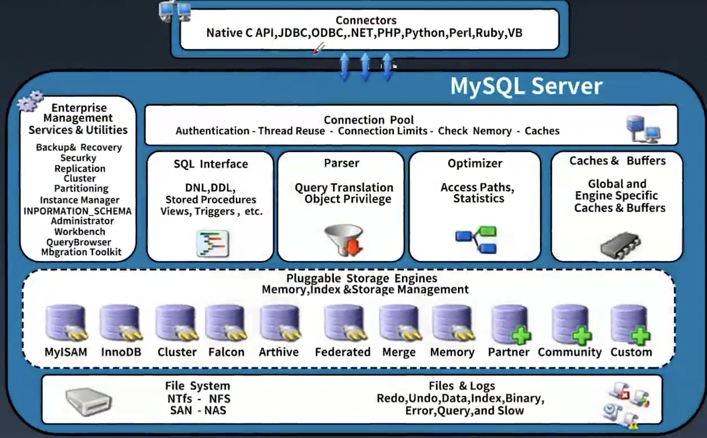
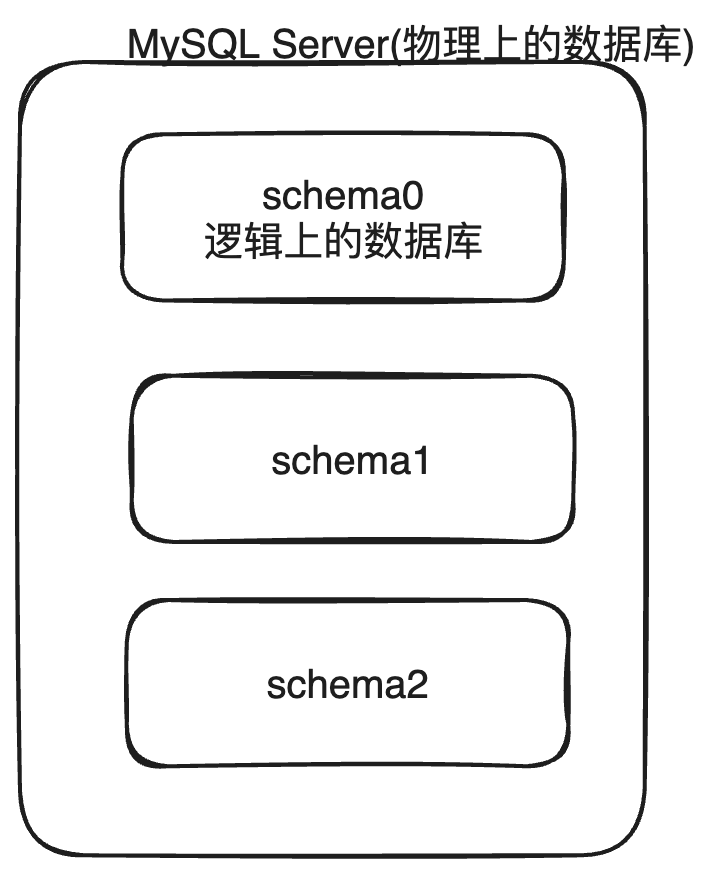
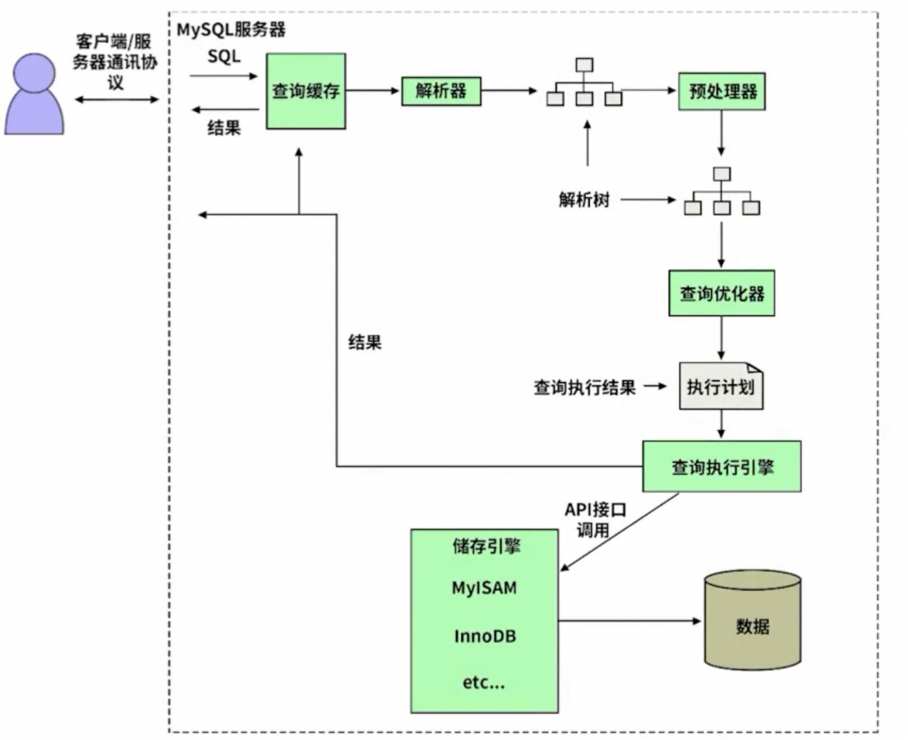
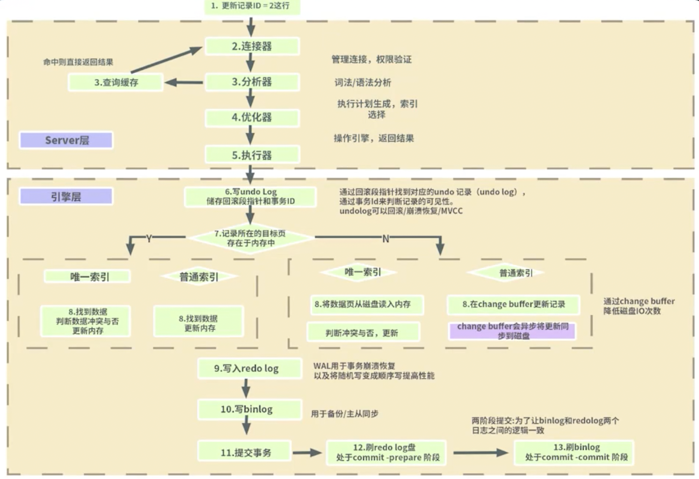
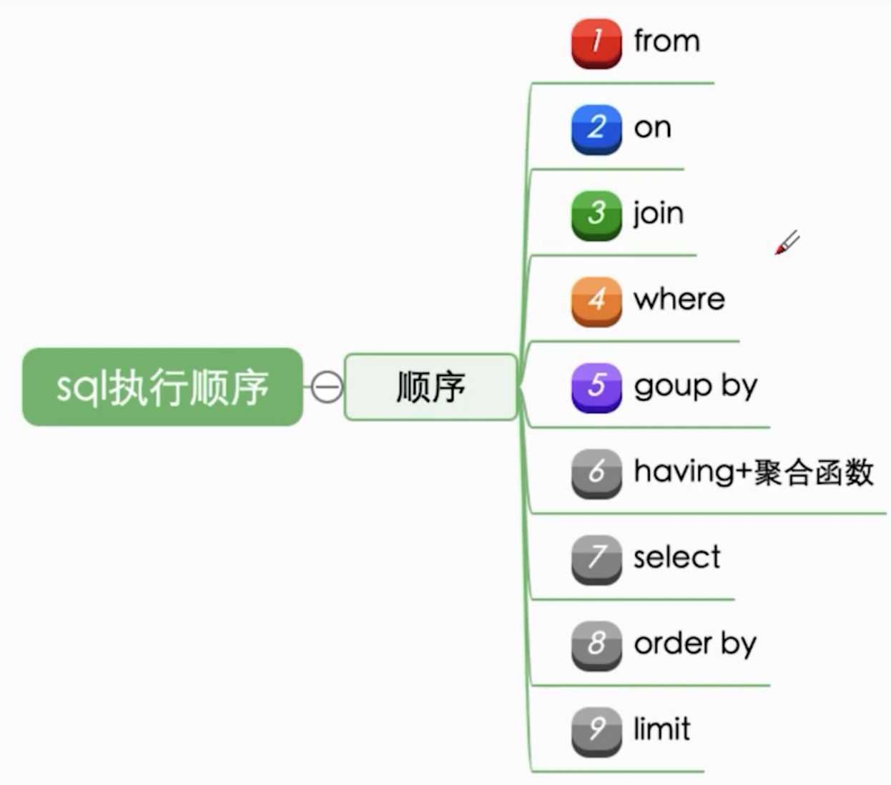

MySQL 架构

从上往下, 从左往右是数据的流动顺序:
Connetors: 一些连接 MySQL 的 client, 比如我们常用 jdbc.
Connection Pool(MySQL 的网络模块): client 的连接在 Connection Pool 中进行统一的管理, 比如身份认证, 线程的复用, 连接数量限制.
这一部分的 IO 操作模式是 BIO, 由于是 BIO, 所以能力较弱
SQL Interface: sql 的接口, 会尝试查缓存, 查不到走 Parser
Parser: sql 解析, 知道我们要拿什么数据, 要处理什么数据
Optimizer: 对复杂的 sql 进行优化
Caches & Buffers: 如果能命中缓存, 可能就直接从缓存走了
Pluggable Storage Engines: 可插拔的组件, 组件可以使用内存, 索引 和管理存储空间
File System: 文件系统, 存储各种文件如日志文件(redo log, undo log 等等) , 索引文件
Enterprise Management: 企业管理工具, 有备份, 回复, 复制, 等功能
在上面的这些组成部分中, Pluggable Storage Engine 是可以替换的, 也是我们想要对 MySQL 拓展时能进行拓展的点
MySQL 存储
MySQL 对于表的相关信息存储可分为共享模式和独占模式, 独占模式是默认的. 独占模式: 一个 database(schema) 中各个表的相关信息分开存放, 放在不同的文件里 共享模式: 一个 database(schema) 中所有表的信息放一个文件里.
在独占模式下有以下几种文件:
- 日志组文件: *.ib_logfile0, *.ib_logfile1 默认大小为 5M, ib 是 innnodb 的缩写
- 独占表空间文件: *.ibd 在独占模式下, 每个表都会用一个文件存储自己的信息, ibd 表示 innodb 的 data
- 表结构文件: *.frm
- 字符集和排序规则文件: db.opt opt 表示option
- binlog 二进制文件: 记录主数据库服务器 DDL 和 DML 的操作, 也就是记录对数据库本身的结构做的修改操作和对数据的修改操作
- 二进制日志索引文件: master-bin.index
通过设置innodb_file_per_table=OFF 即可改为共享模式
在共享模式下:
一个 schema 的所有表空间文件内容和表结构文件内容会放到一个文件里, 这个共享表文件的名称为ibdata1
从物理上和逻辑上理解独占模式和共享模式的区别(如下图): 在物理上, 我们认为一个MySQL数据库就是 MySQL运行的服务器, 里面管理着多个逻辑上的数据库(database 或者叫 schema), 也就是说一个物理的MySQL Server 的实例可以放多个逻辑数据库
我们说MySQL Server 这个进程or 这个服务器 时指的是一个 MySQL实例.
当我们说存取数据的基本单元的时候, 我们说的是逻辑的一个一个 schema
每个 database(schema) 在MySQL 的数据文件夹下是一个单独的子文件夹, 里面存放里自己的表结构文件和表空间文件. 默认情况下(也就是独占模式 ), 每个表都会有自己的独占表空间文件和表结构文件

MySQL 执行流程
简化版

先查询缓存, 如果缓存中存在对应的查询记录, 并且从上一次到这一次的时间段之内数据没有被修改过, 那么就直接把缓存结果返回.
查不到缓存, 解析器对 sql 语句进行解析得到 一颗抽象语法树 AST, 交由预处理器预处理, 接下来优化器来进行优化判断什么方式是最优的(相当于我们打车, 得到几条打车路线, 这几条打车路线哪个最快? 接下来就要考虑那条路线是最优的), 得到他认为执行效率最高的方式(最优的路径)之后, 生成执行计划 , 将执行计划发送给引擎, 存储引擎按照执行计划的操作方式去查表, 查索引, 数据拼接,返回结果给调用方并存入缓存.
详细版

从大的层次来看, 可以分成 Server 层和引擎层
在 Server 层主要做了 “接受请求, 语句的解析, 执行计划的生成”, 过程如下:
client 发来一条 update 语句, 连接器首先获取到连接, 然后交给分析器, 分析器查询缓存, 如果存在缓存就直接返回, 否则交给优化器, 优化器生成执行计划, 然后让执行器去调用引擎层来执行
在引擎层的流程为:
-
写 undo log, 因为现在是对数据的更新操作, 涉及到事务(此处的事务是隐式的),所以要先写 undo log
Q1: 如果没有手动开启事务的话, 还会写 undo log 吗
会, 即使用户没有显式地使用
START TRANSACTION或BEGIN命令开始一个事务，InnoDB 会为每一个单独的 SQL 语句启 动一个隐式事务，并且在语句执行完毕后立即进行提交 -
找记录所在的目标页
- 如果目标页在内存中, 直接修改内存
- 如果目标页不在内存中, 那么去我们的 file system 中读取记录然后拉到内存中在进行修改
-
写 redo log
-
写 bin log
-
提交事务
-
后续步骤和图中一致
Q&A
Q1: 为什么要先写 undo log 再写别的 log 呢?
因为 undo log 是用来回滚的, 后续的过程比较长, 一旦发生了变动, 那么必须有一个 checkpoint 来进行回退, 所以最开始就得先 写 undolog
redo log 是和事务深度绑定的, 如果我们的事务成功, 但是事务没来得及刷磁盘的数据块, 那么当我们恢复的时候, 还是 会去 执行 redo log 完成刷盘(redo log 用到的磁盘数据块和事务修改对应数据的磁盘数据块不是同一个数据块)
bin log 是用来主从复制的, 所以需要有binlog
MySQL对 SQL 的执行顺序

前三步拿到我们需要的 table (from，on, join 找到需要的表，然后以指定的条件把他们关联在一起得到一个新的虚拟表），接下来对 table 中的数据进行过滤（对上一步拿到的大的虚拟表进行过滤，where 是根据直接条件进行过滤，group by 和 having 是分组之后的条件进行过滤），过滤完之后得到一个过滤结果，接下来考虑如何显示这些数据（因为过滤完之后的结果集可能有几十个字段，所以 select 决定我们显示哪些字段，order by 让我们知道以什么顺序来显示，limit 限制了显示的条数）